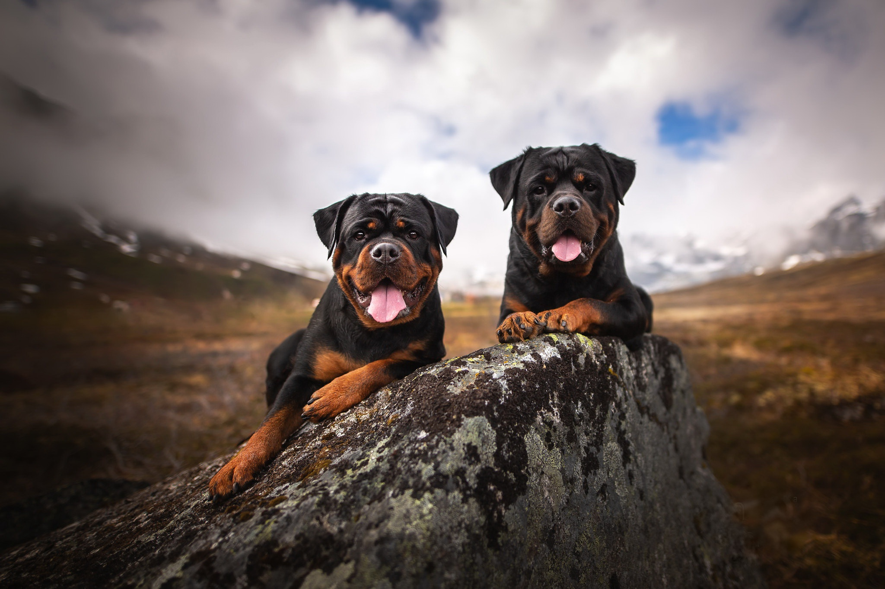

Rottweiler
The Alaskan Malamute is a large breed of dog that was originally bred
for their strength and endurance to haul heavy freight as a sled dog
and hound. They are similar to other arctic, husky, and spitz breeds
such as the Greenland Dog, Canadian Eskimo Dog, the Siberian Husky,
and the Samoyed.